Soy Claudia Díaz-Pallarés, estudiante de 2º de Bellas Artes y Diseño en la Universidad Francisco de Vitoria.
Mi trabajo nace del interés por la cultura, la belleza y la dimensión espiritual. Me inspira la belleza de las cosas pequeñas y esas emociones que remiten a Dios y a una experiencia más profunda de la realidad.
Serie de pintura centrada en la presencia, el detalle y la fuerza simbólica de la figura.
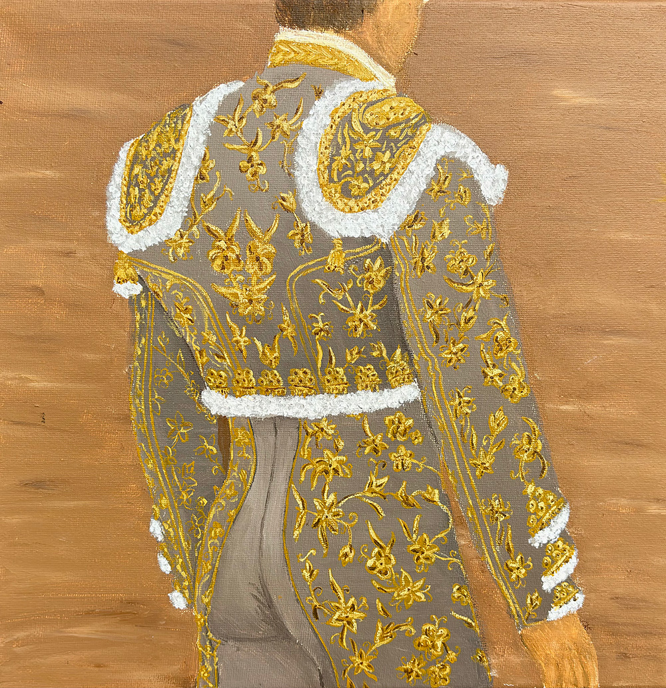
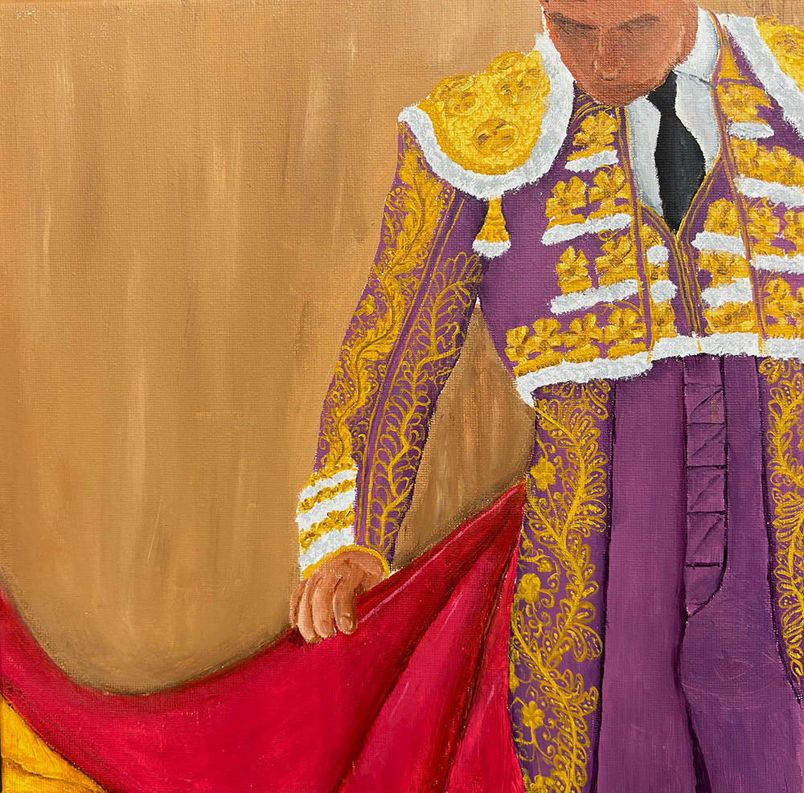
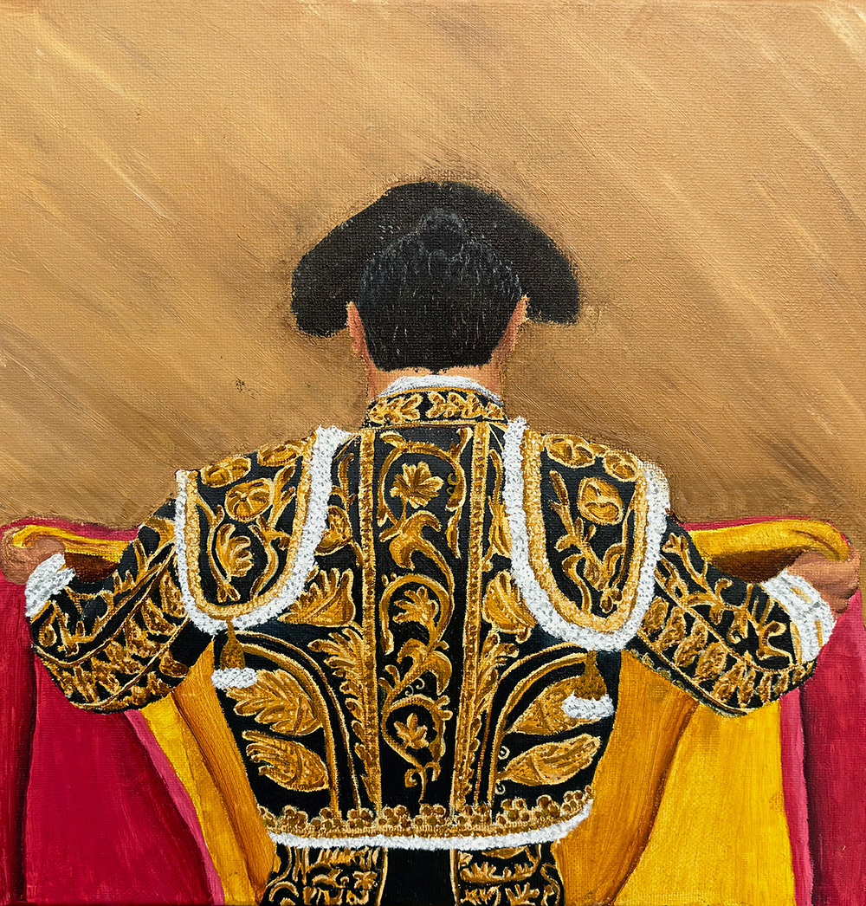
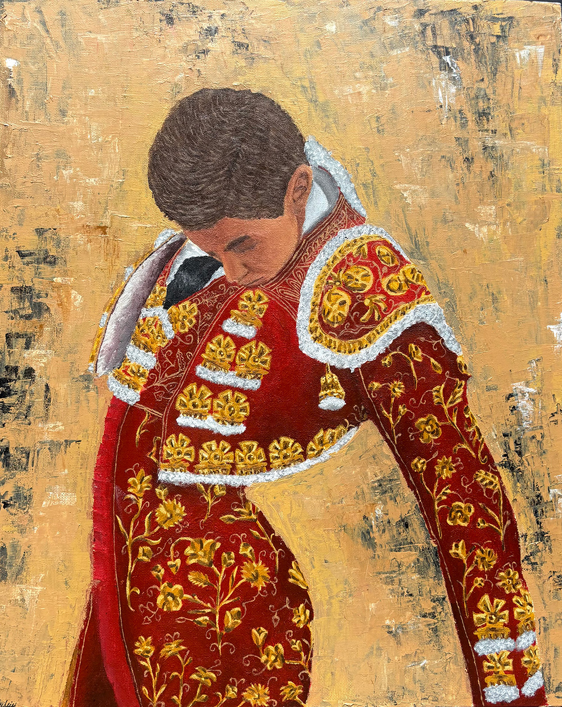
Acuarelas que exploran el ritmo del cuerpo, el vuelo del capote y la tensión del gesto.
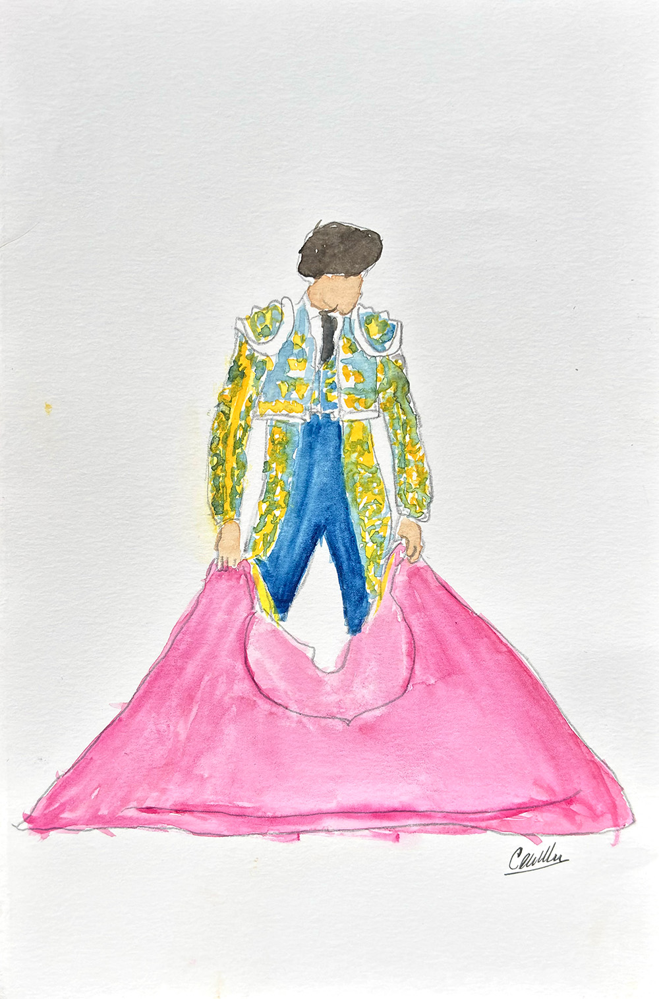
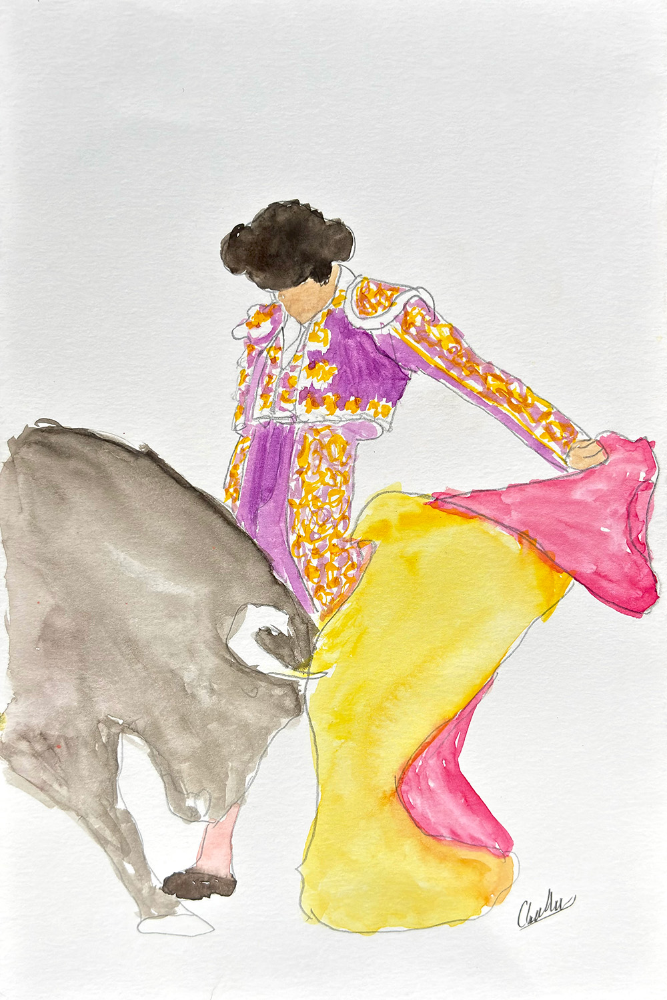
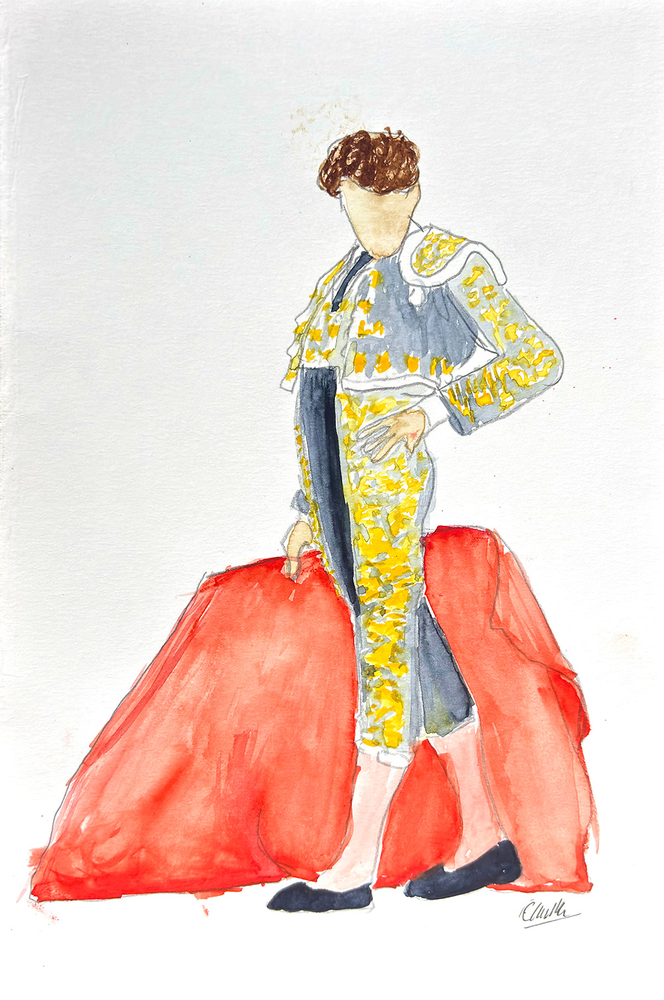
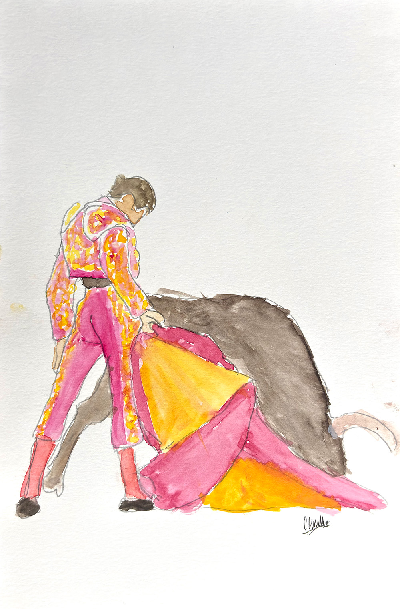
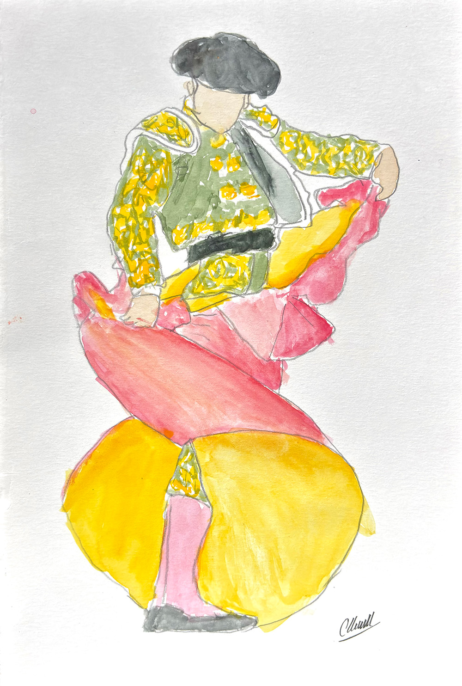
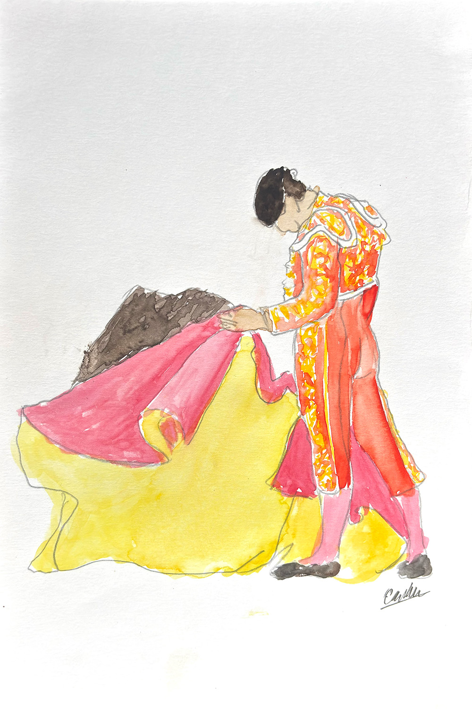
Obras donde la materia y la imagen se convierten en lenguaje emocional y espiritual.
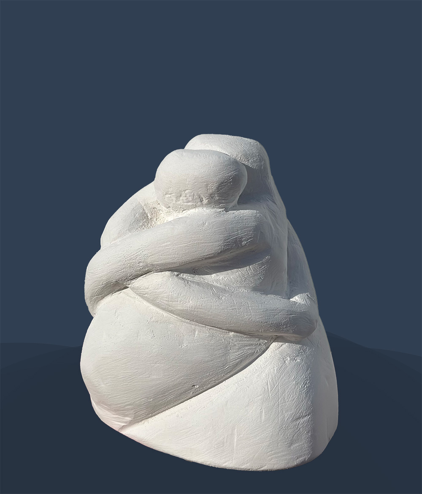
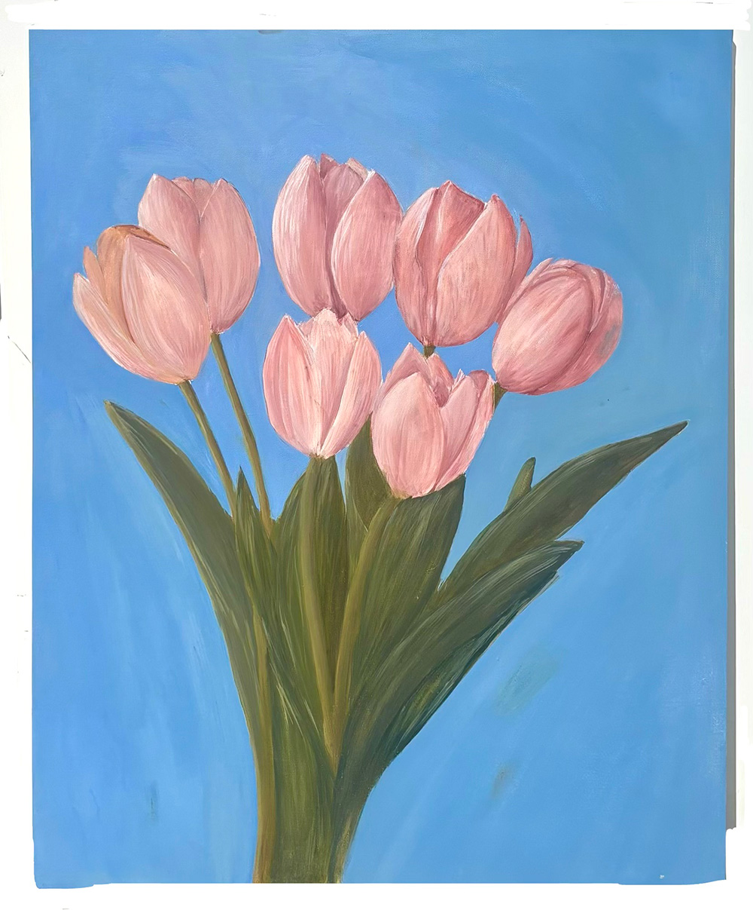
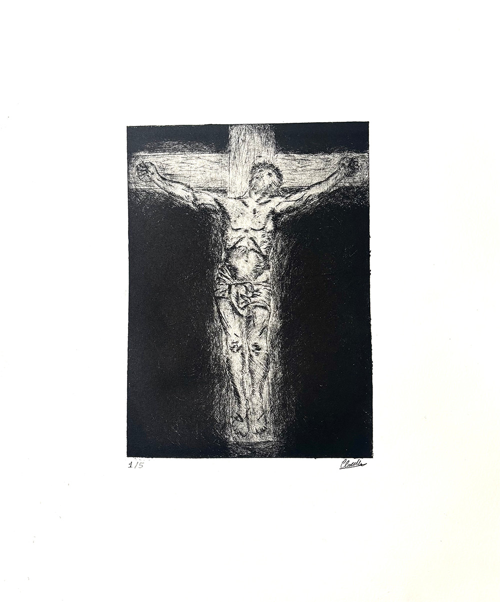
Si quieres conocer más sobre mi trabajo o seguir mi proceso creativo, puedes encontrarme aquí: